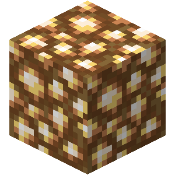
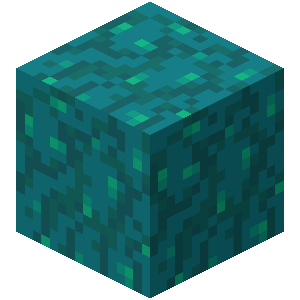
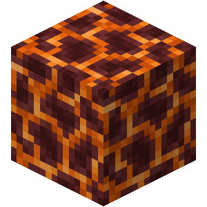

My Favorite Nether Blocks
1. Glowstone

- Reason why:
- This is by far the best block for lighting in Minecraft and is only found in the nether. It may be very hard to acquire but it is well worth it. Glowstone matches almost all of my building styles in both the nether and the overworld.
2. Nether Wart Block

- Reason why:
- This is a relatively new block to the game. For similar reasons that I like the prismarine bricks, I enjoy using the nether wart block as a slash of color when white/grey is the dominant color in my build.
3. Magma Block

- Reason why:
- This block is very unique in the fact that it looks like it would produce light but it actually does not. For that reason, it is a great block for giving off the apperance of light when there is not any. The only downside of the block is that is damages the player when stepping on it.